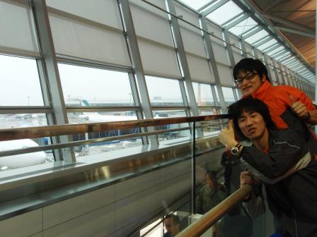
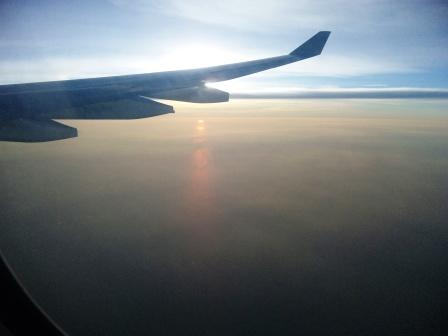

1日目～赤道をまたぎ、いざ熱帯の島国へ～
今回の旅の起点となるのは中部国際空港。キャセイパシフィック航空にて、香港を経由してインドネシア首都、ジャカルタへと向かう。1週間後に合流することになっているKENを日本へ残し、卒論発表を終えた二人は意気揚々と飛行機に乗り込んだ…


ものの、飛行機に乗り込んで間もなく、大井の財布がなくなったことに気付く。財布は2つに分けていたため全額を失うことは無かったが、幸先の悪いスタートとなってしまった。


香港国際空港に到着。このどんよりとした曇り空のように、大井の心は晴れない。なにしろ国を出る前に５万円を失ってしまったのだ。香港の空港はとにかく広い。歩くだけでも相当な距離だった。そして意外にも、付近の地形は平たんではなく、山がちだった。次の便までの時間はおよそ３時間。それまでに、なくなった財布についての情報を手に入れたかった。とりあえずセントレアの電話番号を調べるため、売店の近くにあったインターネット端末を使うことにした。売店で何か買い物をすれば使わせてもらえる仕組みだった。大井は売店でエクレアを買った。このとき支払いは米ドルで行ったため、若干のおつりが香港ドルで返ってきた。おそらくこの先使われることはないだろう。セントレアに問い合わせた結果、なんと財布が警察署に届いているということだった！中身を確認しておくのを忘れてしまったが、入っていることを祈りつつ、旅を続ける。大井の顔は晴れやかだ。


赤道をまたぎ、南緯の世界へ。インドネシアではまず、ロンボク島でダイビングを楽しみ、その後ＫＥＮと合流。レンタカーで目指すはここから西のスマトラ島の赤道直下だ。

ジャカルタに到着！スカルノ・ハッタ国際空港の到着ロビーはあまり飛行場という雰囲気はなく、駅のようだ。ビザ(２５ドル)を取得後、入国審査を済ませてインドネシアルピアへ両替をした。レートは約１００ルピア/円。
両替を済ませて空港の外へ向かおうとすると、「ヘイ！タクシータクシー！」と、やたらタクシーのドライバーが声をかけてきた。客引きがすごい。そして夜の２１時ごろだというのに、人の数がすさまじかった。スリに警戒しつつ、後のレンタカー手配をスムーズにするため、レンタカー会社を探す。声をかけてきたレンタカー会社の人に連れられ、空港の外へ。とたんにムンとした暖かい空気が体を包んだ。あつい・・・。
レンタカー会社の人は空港外に並べられたいくつものレンタカーをいろいろと見せてくれた。主流はＴＯＹＯＴＡのキジャンというミニバンだ。日本では生産されていない車だが、だいたい大きさはＶＯＸＹくらいだろう。値段を聞くと、一日５千円ほどだという。これは、地球の歩き方にのっている値段の２倍ほどの額だ。物価が値上がりしたのか、はたまたぼられているのか。到着早々こんな交渉をすることになるとは・・・。とても疲れた。とりあえず夜も遅いので、飛行場でのレンタカー探しはやめ、明日市内でも探してみることにしよう。
空港からジャカルタの市内へはタクシーではなく、けちってバスを使った。空港から市街まで、ダムリというわりと快適なバスが片道２００円ほどで運行している。高速道路を使うことと、距離からして日本ならば軽く１０００円は超えてしまいそうなのに、早くも物価の安さを感じた。


終点ガンビル駅で降りた後、安宿が集まるというジャランジャクサ地区へ。とりあえず寝床の確保ということで、ホテルを探す。ボルネオホステルに飛び込んで聞くと、あと一室だけ残っているという。クーラー付のため、一番値段の高い部屋だった（一人約７５０円）。
部屋で少し休憩した後、小腹が空いたので近くの屋台へ。夜中の２３時ごろだというのに、この通りはかなり活気がある。
記念すべきインドネシアでの料理第一号は、代表的なナシゴレン。つまりチャーハンだ。一杯約７０円。スナックのようなものはクルプッというえびせんべいで、ナシゴレンには欠かせないのだそうだ。サクサクしていて割とおいしかった。予想通り、ナシゴレンは結構辛い（筆者は甘党）。食事をしているとおばさんおじさんが声をかけてきた。英語がわりと通じるので、話はそこそこ盛り上がる。と、突然マ○コ！！などと日本語で叫びだしたではないか。他の日本人観光客から教わったのだろう。
翌日へ